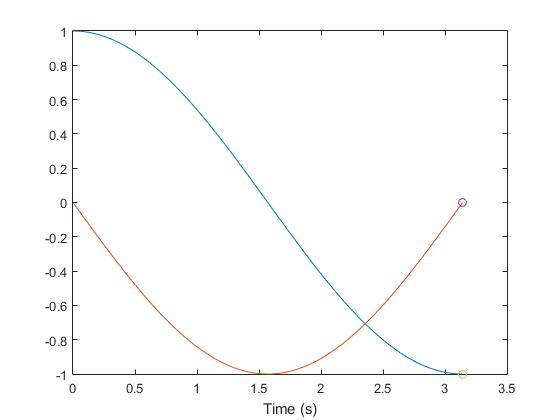

Examples of odehybrid
This script contains numerous examples of using odehybrid to simulate continuous and discrete systems, from a simple example to more complex examples with non-vector states and logging, introducing all primary features of odehybrid. It's meant for viewing directly in MATLAB by clicking "Publish" in the editor or entering:
home = fileparts(which('examples_odehybrid')); web(fullfile(home, 'html', 'examples_odehybrid.html'));
at the command line. This will run the code and open the result as HTML.
For additional discussion, see:
- Online documentation (http://www.anuncommonlab.com/doc/odehybrid/)
- Discussion of how simulations work (http://www.anuncommonlab.com/articles/how-simulations-work/)
- Motivations behind the tool (http://www.anuncommonlab.com/blog/a-simulation-engine/)
Copyright 2014 An Uncommon Lab
Contents
Basics
Short and Direct
Let's say we have a continuous system in the form:
where is the continuous state and is some state updated at a discrete time step as

Here, we'll give a quick embodiment of this system to show how we can simulate it from its initial condition over time. Afterwards, we'll go more into how it works.
Let ode, de, dt, x, and u be , ,  , , and , respectively.
, , and , respectively.
ode = @(t, x, u) [0 1; 2 0] * x + [0; 1] * u; % Differential equation de = @(t, x, u) deal(x, -[8 4] * x); % Discrete update equation dt = 0.1; % Discrete eq. time step ts = [0 5]; % From 0 to 5s x0 = [1; 0]; % Initial continuous state u0 = 0; % Initial discrete state [t, x, tu, u] = odehybrid(@ode45, ode, de, dt, ts, x0, u0); % Simulate! plot(t, x, tu, u, '.'); xlabel('Time'); % Plot 'em. legend('x_1', 'x_2', 'u', 'Location', 'se'); % Label 'em.
This was really quick. Notice how the discrete system is updated regularly every 0.1s, while the continuous system has many more intermediate steps.
Let's look at what we did. First, it's clear that represents (suppressing the dependence on time):
The discrete state is and can be thought of as a controller of this unstable system, guiding it towards [0, 0] (without , the system would diverge from [0, 0]). It's updated at 10Hz according to which is just:
The second input to the de function is the u state, but the current u won't depend on the last u, so it's unused.
Notice that the discrete update equation actually has two outputs (the deal function maps argument 1 to the first output and argument 2 to the second). This is because odehybrid allows the discrete update equation to also update the continuous state as well. This is useful for very fast phenomena, like a quick burst of rocket power to change a satellite's orbit. In MATLAB code, we have:
[x_c, x_d] = de(t, x_c, x_d);
Note that, despite that this example is using linear systems, that has nothing to do with odehybrid. The continuous and discrete equations can be anything (nonlinear, stochastic, user inputs, etc.).
For the readers with controls backgrounds, this is clearly a discrete proportional-derivative controller for the unstable linear system.
That's all there is to setting up this basic system, so let's make things more interesting.
Multiple States
As state vectors become large, they become unwieldy. It's difficult to remember what the 10th state is, or the 2031st state. For this reason, odehybrid allows the use of individual states as individual arguments into the ODE and DE functions.
Let's reuse the above example, but let's add something to our discrete controller. Instead of a proportional-derivative controllers, let's make it a proportional-integral-derivative control. Now we'll have two discrete states to keep track of: the input, u, and the integral term, i, that gets updated every step.
That i term is updated as:
To use multiple states, we'll need them to be inputs to our ode and de functions. Plus, the de function will have to output the new discrete state.
We'll also add a disturbance to the model so the integral term has something to account for. We'll just tack + [0; 1] onto the end.
Here's the new ode (the final input is the integral term, i, but it doesn't need it):
ode = @(t, x, u, i) [0 1; 2 0] * x ... % Continuous system + [0; 1] * u ... % with feedback control + [0; 1]; % and with a disturbance
The new de is easy too (it uses the integral term, but not the last u):
de = @(t, x, u, i) deal(x, ... % No change to cont. state -[8 4 1] * [x; i], ... % Update input i + 0.5 * x(1)); % Update integrator
The options are the same:
dt = 0.1; % Discrete eq. time step ts = [0 5]; % From 0 to 5s x0 = [1; 0]; % Initial continuous state
Two say we have two separate discrete states, we use a cell array for the discrete state and put each initial value in the appropriate place.
d0 = {0, 0}; % Initial discrete states
The discrete states are output separately:
[t, x, td, u, i] = odehybrid(@ode45, ode, de, dt, ts, x0, d0); % Simulate! plot(t, x, td, [u, i], '.'); xlabel('Time'); % Plot 'em. legend('x_1', 'x_2', 'u', '\int x_1(t)/2 dt'); % Label 'em.
That's still pretty easy to implement. We can expand the continuous states too. The important part is that the ode has the form:
[x_dot_1, x_dot_2, ..] = ode(t, x1, x2, .., xd1, xd2, ..);
And the de has the form:
[x1, x2, .., xd1, xd2, ..] = de(t, x1, x2, .., xd1, xd2, ..);
After simulation is done, odehybrid will output:
[t, x1, x2, .., td, xd1, xd2, ..] = odehybrid(@ode45, ... ode, de, dt, ts, ... {x1, x2, ...}, ... {xd1, xd2, ...});
Multiple Continuous and Discrete States
We'll quickly re-implement the above, with multiple continuous and discrete states. Let's use p for and v for .
ode = @(t, p, v, u, i) deal(v, ... % dp/dt (same as before) 2 * p + u + 1); % dv/dt (same as before) de = @(t, p, v, u, i) deal(p, ... % No change to p v, ... % No change to v -8*p - 4*v - i, ... % Update input i + 0.5 * p); % Update integrator dt = 0.1; % Discrete eq. time step ts = [0 5]; % From 0 to 5s x0 = {1; 0}; % Initial continuous states d0 = {0, 0}; % Initial discrete states [t, p, v, td, u, i] = odehybrid(@ode45, ode, de, dt, ts, x0, d0); plot(t, [p, v], td, [u, i], '.'); xlabel('Time'); legend('p', 'v', 'u', '\int p(t)/2 dt'); num_steps = length(t);
Note how all of states are inputs to ode and de (and therefore must be outputs). Also notice how all of the states are output from odehybrid.
Using Structs for States
Aside from using multiple states, we can also use states that aren't simple scalars or vectors. For instance, we can use structs. As a system begins to have many subsystems, using structs is a good way to keep track of scope for all of the states. For instance, we might have car_sw.cruise_ctrl.speed and car_sw.monitor.lane_watcher, clearly keeping variables scoped to specific systems. Plus, it's easy to hand off relevant substructs to the subsystems:
car_sw.cruise_ctrl = cruise_alg(car_sw.cruise_ctrl, current_speed);
% ...
car_sw.monitor = monitor_alg(car_sw.monitor, sensor_bus, ..);
Let's continue our PID controller example, making the discrete state a structure with fields for u and i, and let's also make the continuous state a struct with fields for p and v.
type example_odehybrid_structs
% A simple example of using structs with odehybrid.
function example_odehybrid_structs()
dt = 0.1; % Discrete eq. time step
ts = [0 5]; % Simulation time
x0 = struct('p', 1, 'v', 0); % Initial continuous states
d0 = struct('u', 0, 'i', 0); % Initial discrete states
% Simulate.
[t, sig, td, ctrl] = odehybrid(@ode45, @ode, @de, dt, ts, x0, d0);
% Plot.
plot(t, [sig.p], t, [sig.v], td, [ctrl.u], '.', td, [ctrl.i], '.');
xlabel('Time');
legend('p', 'v', 'u', '\int p(t)/2 dt');
end
% Continuous differential equation
function dsdt = ode(t, signal, controller) %#ok<INUSL>
dsdt.p = signal.v;
dsdt.v = 2 * signal.p + controller.u + 1;
end
% Discrete update equation
function [signal, controller] = de(t, signal, controller) %#ok<INUSL>
controller.u = -8 * signal.p - 4*signal.v - controller.i;
controller.i = controller.i + 0.5 * signal.p;
end
Updating the structures with the discrete update equation is clear (simply update the structs and return them). For the continuous state, we return structs with the same structure, but the values they contain are the time derivatives. Notice in the above out the output struct of the differential equation is called dsdt for "d-signal-by-dt". Its p field is really and similarly its v field is really . In this way, all of the values in the input struct can be correctly updated with the corresponding derivatives.
example_odehybrid_structs();

Using Other Types
We can mix and match states of different types, including numeric types, structs, and cell arrays. Here's an example set of discrete states with all three:
d0 = {magic(3), % 2D array
struct('mode', 1), % struct
{5, [1 2 3], [1 2; 3 4]}}; % cell array
Numeric types can also have any data type, e.g. int16, and this will be handled appropriately.
There is one important thing to note: the size and structure of these states can't change during the simulation. For instance, if one state were a string for the status, e.g., 'online', and the status were changed in the simulation to 'offline' (a different number of characters), there would be an error. Instead, one can either use numbers to represent online or offline or one could pad online with an extra space, i.e., 'online '.
For advanced types: if custom objects are desired for the states, those can be used to. However, they must have a state_to_vector method that returns a complete representation of the internal state numerically and a vector_to_state method that reconstructs the object from a vector. See those two function respectively.
Using Logging
Good simulations allow a lot of analysis. So far, we've only been able to get states out of the system and to analyze those states, but what if there were some intermediate variable we wanted to display? We could use MATLAB's debugger to observe their values at each sample, but it's often better to store all of those values and examine them afterwards -- logging. These tools include a logging mechanism called TimeSeriesLogger (it has nothing to do with the timeseries class in MATLAB). It's pretty easy to use. Let's take a look.
log = TimeSeriesLogger(); % Create it. for t = 0:100 log.add('signal 1', t, randn()); log.add('signal 2', t, 10*rand()); end log.plot();
There are many additional options (see the help TimeSeriesLogger), but let's focus on how to use this with our simulation. We'll continue to modify the struct example above. This will consist basically of:
- Creating a TimeSeriesLogger and passing it to odehybrid.
- Adding a log input to the ode and de functions.
- Adding some logging inside those functions.
- Plotting the results when the simulation is done.
Here are the new bits:
log = TimeSeriesLogger(); % Create the logger. % ... [t, sig, td, ctrl] = odehybrid(@ode45, @ode, @de, dt, ts, x0, d0, ... [], log); % ...
function dsdt = ode(t, signal, controller, log) ... % ... if nargin >= 4 log.add('acceleration', t, dsdt.v); end % ...
function [signal, controller] = de(t, signal, controller, log) %... log.add('sampled v', t, signal.v); % ...
Here's the complete simulator:
type example_odehybrid_logging
% A simple example of using logging with odehybrid.
function example_odehybrid_logging()
dt = 0.1; % Discrete eq. time step
ts = [0 5]; % Simulation time
x0 = struct('p', 1, 'v', 0); % Initial continuous states
d0 = struct('u', 0, 'i', 0); % Initial discrete states
log = TimeSeriesLogger(); % Create the logger.
% Simulate.
[t, sig, td, ctrl] = odehybrid(@ode45, @ode, @de, dt, ts, x0, d0, ...
[], log);
% Plot.
plot(t, [sig.p], t, [sig.v], td, [ctrl.u], '.', td, [ctrl.i], '.');
xlabel('Time');
legend('p', 'v', 'u', '\int p(t)/2 dt');
% Add log output.
log.plot();
xlabel('Time');
end
% Continuous differential equation
function dsdt = ode(t, signal, controller, log)
% Calculate the derivatives.
dsdt.p = signal.v;
dsdt.v = 2 * signal.p + controller.u + 1;
% Log the acceleration. We *must* check to see if the log is passed in;
% it won't always be passed in.
if nargin >= 4
log.add('acceleration', t, dsdt.v);
end
end
% Discrete update equation
function [signal, controller] = de(t, signal, controller, log)
% Update the discrete state.
controller.u = -8 * signal.p - 4*signal.v - controller.i;
controller.i = controller.i + 0.5 * signal.p;
% Log the velocity as it was sampled. Logs are always passed to the
% discrete update functions, so we don't explicitly need to check.
log.add('sampled v', t, signal.v);
end
And here's the output from the log.
example_odehybrid_logging();
There we have it. Note that the log won't always be passed in to the ODE. The reason for this is that sometimes the continuous propagators take a large time step, see that the step was too large, and go back and take a smaller time step. The first step is discarded. Because we don't want phantom data points from discarded time steps, odehybrid doesn't pass in the logger until the steps are finalized.
Beyond the Basics
Interpolation
There's a quick detail that must be pointed out about discrete-time updates. Because these update states directly, those states change instantaneously. That is, at say, t=3 seconds, there's the "original" value of a state ("just to the left" of 3, usually denoted as ). Then there's the updated value at . So our time and state history might look like this:
t = [2.76, 2.91, 3, 3, 3.12].';
x = [0.2, 0.3, 0.4, 1.1, 1.2].';
clf();
plot(t, x, '.-');
If we were to try to interpolate this data with interp1, it wouldn't work, because it wouldn't know how to handle the doubled 3.
Therefore, odehybrid includes a function called interpd (for "interpolate, discrete") which can handle this type of thing. Simply specific whether the "-" or "+" values are desired during interpolation. For +, all interpolation between t = 2.91 and 3 will use [0.3 0.4] while exactly at 3 the datapoint will be 1.7, and interpolation afterwards uses [1.7 and 1.8]. For -, it's the same, except the value right at 3 is 0.4.
% Resample |t| and |x| at |ti| using the "right" value: ti = (2.8:0.1:3.1).'; xi = interpd(t, x, ti, '+').' xi = interpd(t, x, ti, '-').'
xi =
0.2267 0.2933 1.1000 1.1833
xi =
0.2267 0.2933 0.4000 1.1833
Other Propagators
While ode23 and ode45, etc., are robust and convenient tools representing some of what's best about MATLAB, odehybrid can expose a few pecularities. For instance, regardless of the dynamics, those functions will always take at least 41 steps to propagate (regardless of what the 'InitialStep' value is in the odeset structure). Since odehybrid uses ode45 (or whatever propagator is passed in) between the discrete steps, this means there will be at least 41 time steps representing the continuous dynamics between the discrete steps. Ouch! That can be way too much. For this reason, odehybrid includes a few of propagators with the same interface as the odefun functions. Perhaps the easiest is rkadapt, which is essentially a drop-in replacement for @ode45 in the examples above.
[t, p, v, td, u, i] = odehybrid(@rkadapt, ode, de, dt, ts, x0, d0); fprintf('This simulation took %.0f%% of the steps required by ode45.\n',... 100*length(t)/num_steps);
This simulation took 33% of the steps required by ode45.
The ode45 and rkadapt functions are adaptive time-step propagators. This means they "figure out" an appropriate time step to take (see the linked article on how simulations work). However, if one knows a good time step, that can be specified with a fixed-step solver. MATLAB doesn't include any of these, so odehybrid includes two: rk4, the most common fixed-step propagator, and rkfixed, which can implement any fixed-step Runge-Kutta method given the appropriate arguments. We'll show an example using rk4. Note that the time step is specified witht he odeset structure.
options = odeset('MaxStep', dt); [t, p, v, td, u, i] = odehybrid(@rk4, ode, de, dt, ts, x0, d0, options); fprintf('This simulation took %.0f%% of the steps required by ode45.\n',... 100*length(t)/num_steps);
This simulation took 22% of the steps required by ode45.
Multiple Discrete Updates
Using multiple discrete update equations is as passing multiple function (in a cell array) in for de and passing their corresponding time steps in for dt. Here is a simple harmonic oscillator. The discrete updates only "sample" the oscillator, with the first update recording the "position" term and the second update recording the "velocity" term. Each discrete update must take in and return all continuous and discrete states (just like for the case with a single discrete update equation).
ode = @(t, x, p, v) [0 1; -1 0] * x; % Differential equation de = {@(t, x, p, v) deal(x, x(1), v); ... % Discrete update equation 1 @(t, x, p, v) deal(x, p, x(2))}; % Discrete update equation 2 dt = [0.1, 0.15]; % Discrete eq. time steps ts = [0 2*pi]; % From 0 to 5s x0 = [1; 0]; % Initial continuous state y0 = {0, 0}; % Initial discrete state [t, x, ty, y1, y2] = odehybrid(@rkfixed, ode, de, dt, ts, x0, y0); clf(); plot(t, x, '.-'); hold on; stairs(ty, [y1 y2], ':'); hold off; legend('Position', 'Velocity', 'Position (0.1s)', 'Velocity (0.15s)'); xlabel('Time (s)');
Advanced Options
Using an OutputFcn
The ode45 function allows one to specify an OutputFcn to be called when the states are updated. This function can, e.g. update plots or determine if the simulation should stop (if it returns anything but 0). odehybrid allows this to pass through, but with all of the arguments separated just like for the ODE and DEs. For instance, here's a simple OutputFcn:
type example_odehybrid_outputfcn;
% A simple example OutputFcn used with examples_odehybrid.
function status = example_odehybrid_outputfcn(t, x, p, v, flag)
% Return true to terminate the propagation.
status = 0;
switch flag
% On init, we receive the time span and init. states.
case 'init'
fprintf('Simulating from %fs to %fs.\n', t);
% When done, times and states are all empty.
case 'done'
fprintf('Finished the simulation.\n');
% Otherwise, we receive 1 or more samples.
otherwise
status = x(1) < 0; % End the simulation with x(1) < 0.
end
end
Let's add this to the simulation above.
options = odeset('OutputFcn', @example_odehybrid_outputfcn);
[t, x, ty, y1, y2] = odehybrid(@rkfixed, ode, de, dt, ts, x0, y0, options);
Simulating from 0.000000s to 6.283185s. Finished the simulation.
Note that the simulation stopped when x(1) fell below 0.
plot(t, x);
xlabel('Time (s)');
Using Events
Another useful property of MATLAB's ODE suite is events. These are used to "narrow in" on a specific occurrence. To use event, one write an event function, which should return a continuous value. The propagator will search for the time at which that value crosses 0. For instance, suppose one wanted a simulation to end when a parachutist lands on the ground. Then one could write an event function that returns her height above the ground. The propagator will take small time steps towards the moment when the height achieves 0. The event function should also return two more pieces of information: if the simulation is to stop when the event occurs and the direction of the zero crossing. See doc odeset for more on Events.
In odehybrid, events are like those for ode45, but take the full set of states as arguments, just like the ODE, DE, and OutputFcn. This function will cause propagation to terminate when the velocity (x(2)) goes to zero from below.
type example_odehybrid_eventfcn
% A simple example Event function used with examples_odehybrid.
function [h, t, d] = example_odehybrid_eventfcn(t, x, p, v)
h = x(2); % An "event" occurs when the velocity is 0.
t = true; % Terminate on event; stop the simulation when h=0.
d = 1; % Trigger when going positive from negative
end
Let's add this to the simulation above. Note that we can only use events with the ODE suite functions. Also, note all the "event" outputs.
options = odeset('Events', @example_odehybrid_eventfcn); [t, x, ty, y1, y2, te, xe, y1e, y2e, ie] = ... odehybrid(@ode45, ode, de, dt, ts, x0, y0, options); plot(t, x, ... te, xe, 'o'); xlabel('Time (s)');
An event function can return vectors instead of scalars, representing multiple possible zero-crossings. The triggering event index is output in ie.
Using Structs for Output
If having eight output arguments is getting to be too many, we can instead use the struct output form.
sol = odehybrid(@ode45, ode, de, dt, ts, x0, y0, options)
sol =
t: [463x1 double]
yc: {[463x2 double]}
td: [42x1 double]
yd: {[1] [0.9950]}
te: 3.1416
yce: {[-1.0000 2.8363e-14]}
yde: {[-0.9991] [-0.1411]}
ie: 1
The struct has a field for each output of odehybrid, with the states grouped into cell arrays.
Comments
Notes on Speed
Most folks would like their simulations to run fast. Here are a few things to consider.
The first thing, which doesn't really have to do with the tools at all, is to make sure the algorithms make sense. For instance, are you simulating a stiff subsystem in the middle of an otherwise loose system (a part with a very fast reaciton time compared to other parts)? That likely causes the entire simulation to run slowly, and often for the purpose of the larger simulation, the stiffest systems can be replaced with functional equivalents (like a table lookup).
The next most important thing is to make the MATLAB code representing the ODE and the DE as fast as possible. See the MATLAB documentation under "Advaned Software Development > Performance and Memory > Code Performance" (R2014a).
Choosing the right continuous propagator also makes a large difference. While ode45 is usually the best place to start, there are better choices are for different types of problems. For MATLAB's ODE propagators, see the MATLAB documentation under "Mathematics > Numerical Integration... > Ordinary Differential Equations". If MATLAB's propagators are taking an excessive number of steps for the continuous-time portions (as above and as is common for control problems), consider using the included rk4 or rkfixed functions. One can also write one's own propagator or pass any Runge-Kutta method's details to rkfixed for an instant, custom propagator.
Using non-numeric types (like structs or cell arrays) for states is convenient and can dramatically reduce development and debugging time. However, there is naturally a speed penalty. How big that penalty is depends the complexity of the state and the functions using the state. In the author's simulations, it's often only about 20% of the overall simulation time, which is a bargain considering the convenience. This should be a last resort.
Finally, logging naturally adds overhead as well. However, some care was taken in minimize the performance impact from logging, and it's often a smaller concern even than using non-numeric types -- less than 20% of the run time. For large numberes of simulations for which detailed analysis won't be necessary, one can simply turn logging off (pass [] for the log argument).
Summary
Summary
We've covered a lot of ground, including how to set up continuous and discrete simulations, use complex states, add logging, work with the results, and achieve better speed. At this point, a careful reader should be able to start making simulations with odehybrid. However, this is not the end of the documentation; it's just a jumping off point. For more info, see:
- The online documentation
- Help for individual functions (e.g., doc TimeSeriesLogger)
- How simulations work